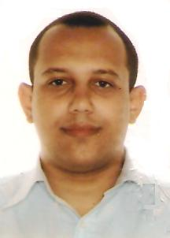
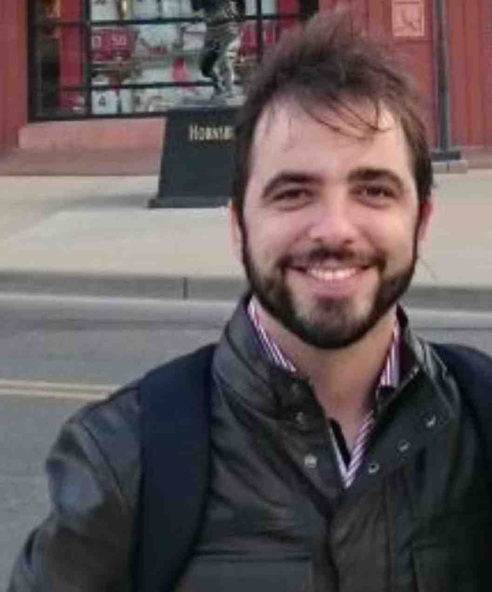
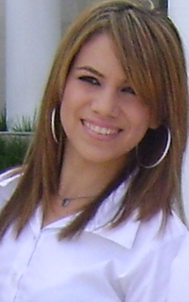
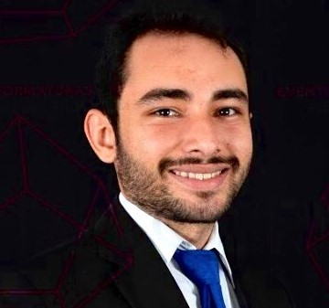
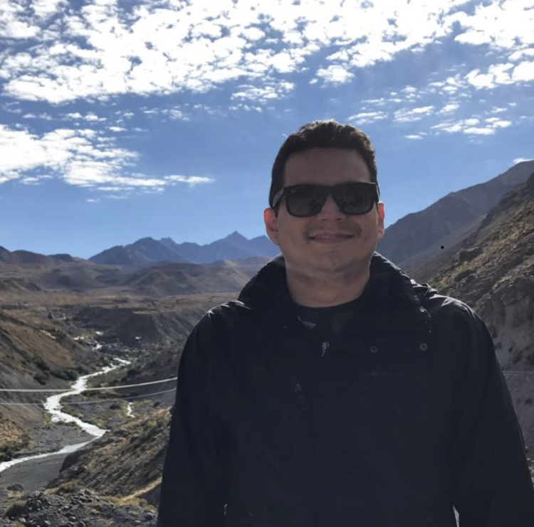
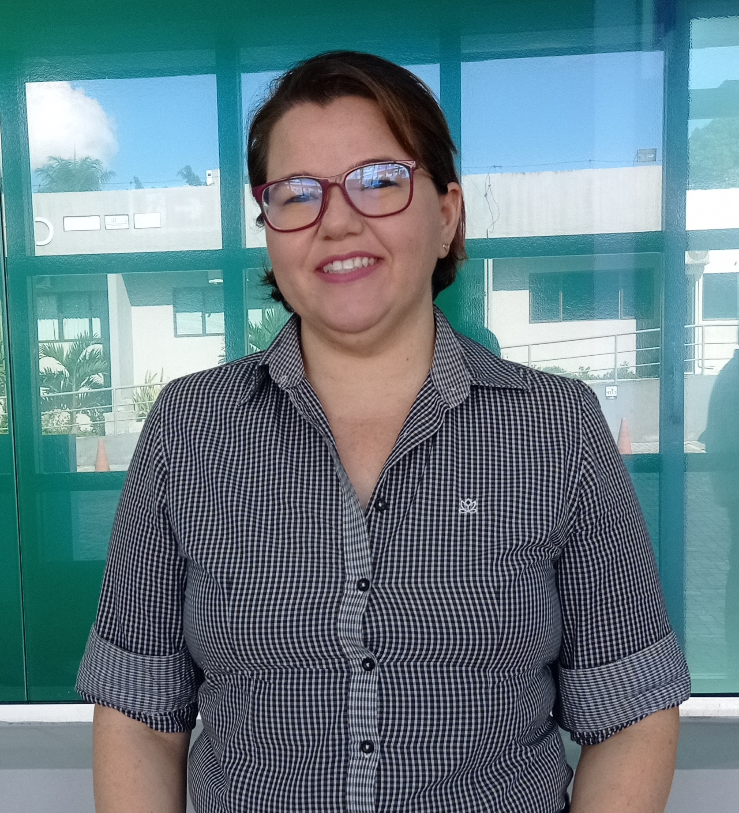
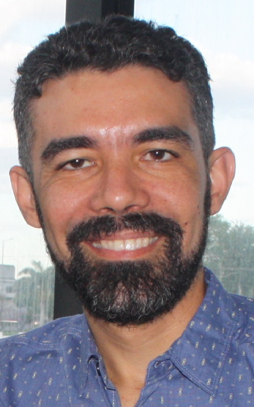
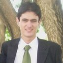
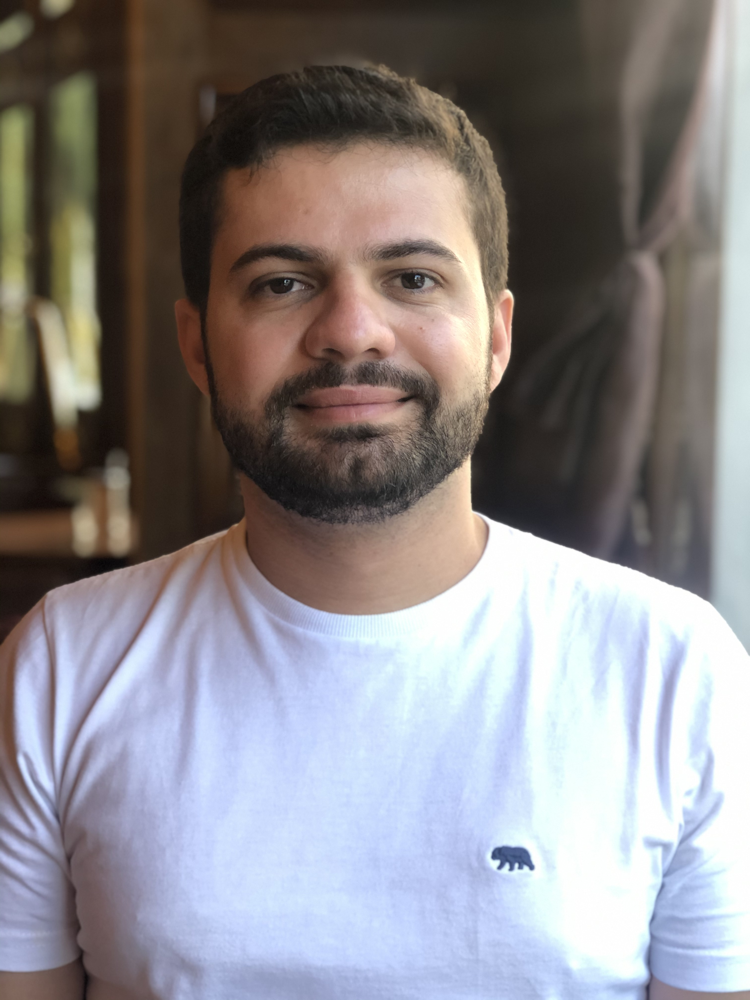
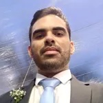

Alberto Gustavo Paashaus Junior, mestre em Administração Pública da Universidade Federal de Campina Grande (2016). Especialista em Gestão Empreendedora e Inovação pela UFCG (2017), em Gerenciamento de Projetos na Faculdade Anglo Americano (2013) e em Economia Social pela Universidade do Minho, Portugal (2009). Graduado em Administração Pública pela Universidade Federal de Campina Grande (2003), em Direito pela Universidade Estadual da Paraíba (2003) e em Administração de Empresas pela Universidade Federal de Campina Grande (2006). Desde 2018 é Professor do Ensino Básico, Técnico e Tecnológico do Instituto Federal da Paraíba, Campus Picuí, para as disciplinas da Área de Gestão e Negócios. Foi pesquisador convidado do Núcleo Estruturante de Políticas de Inovação do MEC/SETEC (2016). Tem experiência de ensino no Ensino Técnico, Graduações e Pós-graduações bem como em pesquisa e extensão nas áreas de Gestão Pública, Gerenciamento de Projetos, Gestão Empresarial, Economia e Empreendedorismo.

Bruno Neiva Moreno, professor no IFPB, campus Soledade, onde ministro atualmente disciplinas no curso técnico de Informática. Além de ter atuado em outros campi do próprio IFPB, fui professor efetivo do IFRN durante seis anos, ministrando disciplinas em cursos técnicos de informática e nos cursos superiores Tecnológicos de Sistemas para Internet e Análise e Desenvolvimento de Software. Sou também avaliador do INEP/MEC com atribuições voltadas para o credenciamento de instituições de ensino na modalidade a distância. Sou doutor e mestre em Ciência da Computação pela UFPE, em Recife, ambos sob a orientação da Profa. Dra. Valéria Times, tendo parte do doutorado ocorrido na Universidade de Ottawa, no Canadá, sob a orientação do Prof. Dr. Stan Matwin. Minha graduação é em Ciência da Computação pela UFPB. Além de ampla experiência no ensino de variadas disciplinas, tenho me dedicado ao estudo de didática para jovens e adultos, com foco no uso de metodologias ativas no ensino de programação. Participo frequentemente de projetos de pesquisa e extensão relacionados à área de computação e educação. Tenho experiência em análise e projeto de sistemas, bancos de dados, mineração e análise de dados de objetos móveis e redes sociais baseadas em localização.

Elyzama Thamirys Araújo Morais, possui graduação em Letras pela Universidade Federal de Campina Grande (2010). É mestre pela Universidade Federal da Paraíba (2014). Atua principalmente na área de aquisição de linguagem; aprendizagem; categorização.

Francisco Erberto de Sousa, possui graduação em Engenharia de Computação pela Universidade Federal da Paraíba (2019) e mestrado em ENGENHARIA ELÉTRICA pela Universidade Federal da Paraíba (2023). Atualmente é pesquisador da Universidade Federal de Campina Grande, professor do Instituto Federal de Educação, Ciência e Tecnologia da Paraíba - IFPB e engenheiro de computação - Departamento Regional da Paraíba. Tem experiência na área de Robótica, Mecatrônica e Automação, com ênfase em Robótica, Mecatrônica e Automação, atuando principalmente nos seguintes temas: educação, sustentabilidade, arduíno, computação.

Ewerthon Dyego de Araujo Batista, possui graduação em Ciência da Computação pela Universidade Federal de Campina Grande (2009), pós-graduação em Engenharia de Sistemas e Redes de Computadores pela ESAB e mestrado em Ciência e Tecnologia em Saúde pela Universidade Estadual da Paraíba (2021). Trabalhou por 11 anos Accenture, empresa multinacional de consultoria. Possui larga experiência em desenvolvimento de software, gestão de projetos e pessoas. Atualmente é professor do Instituto Federal de Educação, Ciência e Tecnologia da Paraíba.

Isabelle Maria Lima de Souza, doutoranda em Ciência da Computação pela Universidade Federal de Campina Grande - UFCG, atuando na linha de pesquisa com ênfase no desenvolvimento de estratégias para estimular o Pensamento Computacional através da Robótica. É mestra em Ciência da Computação pela UFCG (2019), possui especialização em Design de Multimeios Didáticos para EaD pela Faculdade de Administração, Ciências e Letras (2012), graduação em Licenciatura em Computação pela Universidade Estadual da Paraíba (2012). Foi Analista Corporativa do Serviço Social da Indústria ? SESI da Paraíba (2012-2016), onde atuou como Supervisora de Tecnologia da Informação sendo responsável por ações de Educação a Distância, Sistemas de Gestão Escolar e pelo Programa de Robótica Educacional. Foi tutora no curso de ?Análise e Desenvolvimento de Sistemas? na Universidade Norte do Paraná Polo de Campina Grande ? PB (2013-2014), professora de Ensino Superior na Universidade Paulista ? UNIP (2014) no curso de ?Gestão de Tecnologia da Informação? e professora substituta do curso "Técnico em Informática" do Instituto Federal da Paraíba IFPB.

Israel Aires Costa Leal, possui graduação em Engenharia Elétrica - Modalidade Eletrônica - pela Universidade de Pernambuco - UPE (1998). Tem Especialização em Redes Convergentes pela Faculdade Integrada do Recife - FIR (2006). Tem Mestrado em Engenharia de Sistemas pela Universidade de Pernambuco - UPE (2015) e doutorado em Engenharia Elétrica pela Universidade de Campina Grande - UFCG (2020). Tem experiência na área de Engenharia Elétrica, com ênfase em Telecomunicações, trabalhando como Especialista em Telecomunicações na empresa Oi (2000 a 2015) na área de Projetos e Implantação de Sistema Móvel Celular. Foi professor no curso de Engenharia Elétrica na Universidade de Pernambuco (UPE), no curso de Ciências da Computação na Universidade Estadual da Paraíba (UEPB) e no curso Técnico em Informática do Instituto Federal da Paraíba (IFPB) - Campus Soledade. Atualmente, é professor do curso de Engenharia Elétrica da Universidade Maurício de Nassau (UNINASSAU) em Campina Grande. Pesquisa nas áreas de projeto de redes sem fio, sistemas MIMO, cobertura celular, inteligência artificial e sistemas digitais.

Joab Josemar Vitor Ribeiro do Nascimento, possui graduação em Engenharia Sanitária e Ambiental pela Universidade Estadual da Paraíba (2009), mestrado em Manejo de Solo e Água pela Universidade Federal da Paraíba (2011) e doutorado em Engenharia Agrícola pela Universidade Federal de Campina Grande (2019). Atualmente é professor efetivo do Instituto Federal de Educação, Ciência e Tecnologia da Paraíba.

Tiago Brasileiro Araújo, atualmente professor do Instituto Federal da Paraíba (IFPB). Professor do Instituto Federal de Pernambuco (IFPE) entre os anos de 2019 e 2020. Doutor em Ciência da Computação pela Universidade Federal de Campina Grande (UFCG), com período de Doutorado Sanduíche no Exterior (PDSE-CAPES) na Tampere University (Finlândia). Mestre em Ciência da Computação pela Universidade Federal de Campina Grande (UFCG). Especialista em Gestão Estratégica de Tecnologia da Informação pela Universidade Estácio de Sá. Especialista em Moderna Educação: Metodologias, Tendências e Foco no Aluno pela Pontifícia Universidade Católica do Rio Grande do Sul (PUCRS). Bacharel em Ciência da Computação pela Universidade Federal de Campina Grande (UFCG). Lecionou como professor substituto no Instituto Federal de Educação, Ciência e Tecnologia da Paraíba (IFPB). Coordenador do Laboratório de Dados (DataLab/IFPB) e membro do Laboratório de Qualidade de Dados (LQD/UFCG), atuando como pesquisador na área de resolução de entidades. Trabalhou como desenvolvedor/pesquisador em três projetos de desenvolvimento de software e como desenvolvedor pleno no projeto Sony/Venturus.

Victor Ramon França Bezerra de Souza, doutor em Engenharia Elétrica e de Computação pela Universidade Federal do Rio Grande do Norte (UFRN) (2022). Mestre em Sistemas de Energias Renováveis pela Universidade Federal da Paraíba - UFPB no Centro de Energias Alternativas e Renováveis - CEAR (2018). Bacharel em Engenharia Elétrica pelo Instituto Federal de Ciência e Tecnologia da Paraíba (IFPB) (2016). Possui experiência em Sistemas Conectados à Rede (Sistemas Fotovoltaicos / Sistemas de Conversão de Energia Eólica) e Eletrônica de Potência (Conversores Multiníveis). Professor Adjunto da Escola Politécnica de Pernambuco - POLI na Universidade de Pernambuco do Curso de Bacharelado em Engenharia Eletrônica e professor substituto no Instituto Federal da Paraíba do Curso Subsequente em Informática. Áreas de interesse: Conversores Multiníveis, Qualidade de Energia, Filtros Ativos, Instrumentação Eletrônica e Sistemas Distribuídos Conectados à Rede Elétrica.